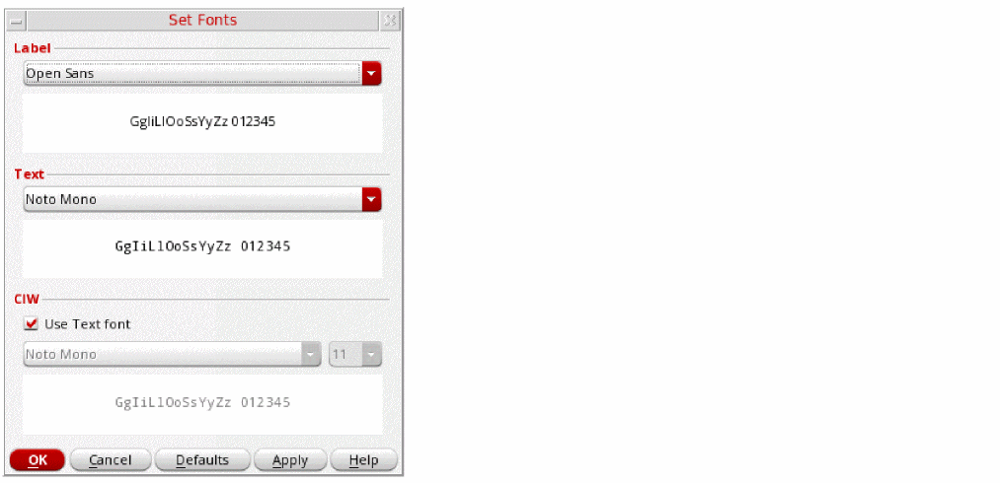

Viewing the Font List and Setting Fonts
To view the list of fonts available on your system:
You can also view the Set Fonts form to display and edit the current fontType settings by either selecting Options – Fonts from the CIW menu bar, or entering hiSetFont() in the CIW entry field.

XFonts have been replaced by TrueType fonts that improve the general appearance and readability of the user interface.
Bitmap XFonts are still supported for Directed Acyclic Graph (DAG) interface and Display List (DLIST).
While TrueType fonts support anti-aliasing, font rendering is controlled using the desktop controls.
Related Topics
Return to top